ROSÉE° הוא מותג טיפוח שלא קיים. בניתי אותו בסטודיו כדי לענות על השאלה שאני שומעת הכי הרבה מקוסמטיקאיות ומבעלות מותגי טיפוח: "יש לי סרום מצוין. איך אני גורמת לזה שלא ישוו אותו לסרום מהפארם?" זו שאלה של מיתוג סרום, אבל היא זהה בכל מותג טיפוח, בכל קליניקה ובכל מוצר שיש לו שלושה מרכיבים ואחוז על התווית. המאמר הזה עובר על ROSÉE° שכבה אחרי שכבה ומראה מה קורה כשמחליטים שהמוצר הוא לא הגיבור. אפשר לפתוח את העולם עצמו בחלון נפרד ולגלול במקביל.
הלקוחה והמקום
קליניקה קטנה בקומה שנייה, חלון שפונה מזרחה. הבעלים היא קוסמטיקאית שעשרים שנה רושמת ללקוחות שלה פרוטוקול בוקר על פתק: מה קודם, מה אחרי, כמה לחכות בין הטיפות. יום אחד היא מחליטה להפוך את הפתק לקו מוצרים. ויש לה בעיה שכל מותג טיפוח קטן מכיר: הסרום שלה טוב, המרכיבים אמיתיים, אבל ברגע שהוא נכנס לבקבוקון עם טפטפת הוא נראה כמו כל סרום אחר. ולסרום שנראה כמו כל סרום אחר יש רק שאלה אחת שמחכה לו: כמה זה עולה אצלך?
ההשראה הגיעה מהחלון. בשעה שהיא פותחת את הקליניקה, הטל עדיין על העלים במרפסת. עד הצהריים הוא נעלם. הטל הוא הדבר הכי לח ביום, וגם הכי זמני. זה כל הבריף. שלוש מילות DNA: שחר, טל, שגרה. והחלטה אחת שכל השאר נגזר ממנה:
לא מוכרים סרום. מוכרים שגרת בוקר.
שימי לב מה ההחלטה הזאת לא אומרת. היא לא אומרת "ורוד", לא אומרת "נחושת" ולא אומרת מילה על המרכיבים. היא אומרת מה המותג מוכר באמת: מחווה אחת בבוקר שמחזיקה עד הערב. ומהרגע שזה ברור, כל שאלה עיצובית שבאה אחר כך (איך מציגים חמישה מוצרים, איך נראית העגלה, מה יש בסרט) מקבלת תשובה מאותו מקום.
מה זה עולם מותג, דרך ROSÉE°
עולם מותג הוא לא לוגו ולא ספר מותג. הוא שכבת החלטה: סט חוקים שקובע מראש מה מותר להשתנות ומה אסור, כך שכל מוצר חדש וכל נקודת מגע חדשה יודעים מה לעשות בלי להתחיל מאפס. ב-ROSÉE° השכבה הזאת מורכבת מארבעה חוקים בלבד:
הציר הוא הזמן, לא המוצר
לכל מוצר יש שעה. מי טל ב-05:30, סרום בוקר ב-06:15, קרם עיניים ב-07:00, קרם יום ב-07:45, ואליקסיר לילה ב-22:00. השעה מופיעה בכל מקום שהמוצר מופיע: על הגלגל, בריטואל, בכרטיס בחנות ובעגלה.
חתימה אחת: הטיפה
טיפה אחת שנופלת לנוזל ורוד ופורחת. היא פותחת את העולם, היא הסרט, היא הלוגו בתנועה. כל מה שזז ב-ROSÉE° זז בקצב של טיפה: איטי, רך, בלי חיתוכים.
אור אחד: שחר
הפלטה היא שמיים של לפנות בוקר: שזיף שמתבהר לשמנת, זכוכית ורודה, נחושת. השמיים מאחורי הגלגל באמת מתבהרים תוך כדי גלילה, משזיף לשמנת, כי הבוקר מתקדם.
קול אחד
כותרת צרפתית קצרה, ומתחתיה עברית. La Goutte, Le Manifeste, Le Cadran de l'Aube, Le Rituel, La Boutique, Le Film. לכל מוצר שורה אחת, כמו הערה של קוסמטיקאית על הפתק: "הסרום נכנס כשהעור עוד לח."
ארבעה חוקים. עכשיו נראה איך הם מחזיקים שבע נקודות מגע שונות לגמרי, כולל אחת שבה ההבטחה צריכה לשרוד את הקופה.
שכבה 1: La Goutte, הטיפה
העולם נפתח בטיפה. לא בלוגו, לא בכותרת, לא במבצע. טיפת סרום נופלת לנוזל ורוד חלבי, פוגעת, ופורחת לענן. וכאן הפרט שעושה את ההבדל: הטיפה לא מתנגנת לבד. הגלילה שלך שולטת בזמן. גוללת לאט, הטיפה נופלת לאט. עוצרת, היא נעצרת באוויר. הרצף הוא שמונים פריימים שהאצבע מנגנת, וההרגשה היא שהמותג נותן לך את הבוקר ביד.
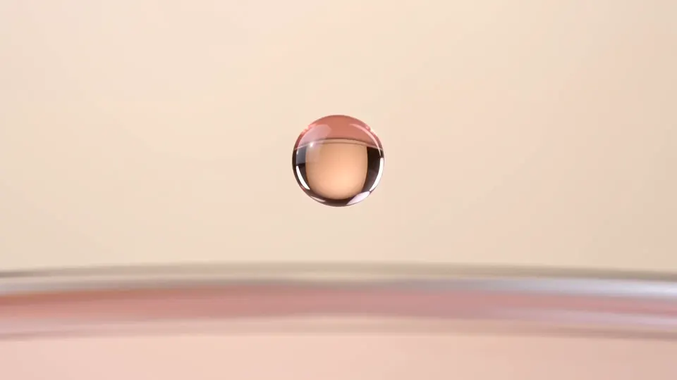
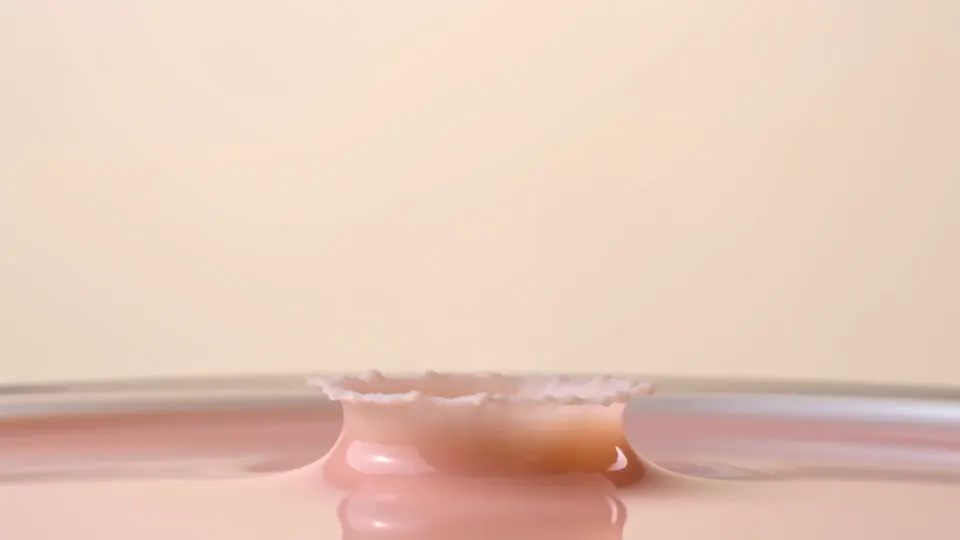
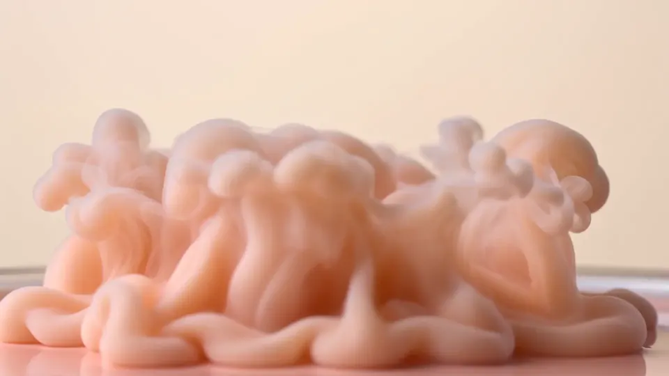
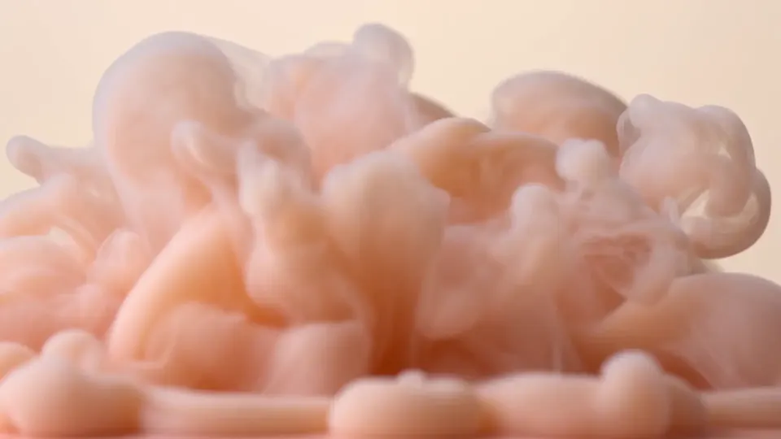
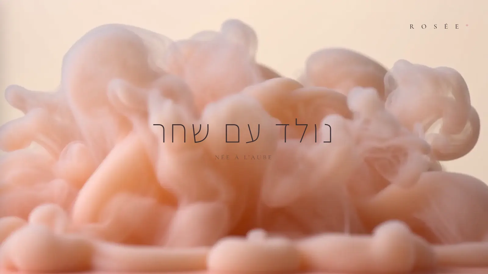
רק כשהענן ממלא את המסך מופיעה השורה היחידה של הפתיח: נולד עם שחר. אין "ברוכות הבאות", אין הסבר על המרכיבים. הלקוחה עוד לא יודעת מה המותג מוכר, אבל היא כבר יודעת באיזה קצב הוא מדבר. וזה, מסתבר, מספיק כדי לזכור אותו.
מה נשאר קבועהטיפה, הוורוד החלבי, הקצב האיטי, שורה אחת.
שכבה 2: Le Manifeste, המשפט
מתחת לפתיח, על רקע שמנת ריק, ארבע שורות:
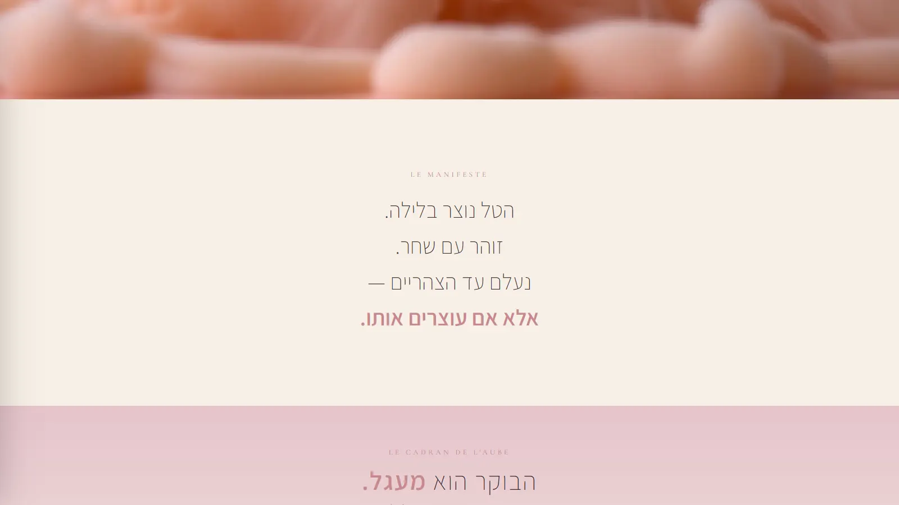
"הטל נוצר בלילה. זוהר עם שחר. נעלם עד הצהריים, אלא אם עוצרים אותו." זו ההבטחה, בלי לומר את המילה הבטחה. השורה הרביעית היא המוצר: "אלא אם עוצרים אותו" זה מה שהסרום עושה. אבל שימי לב שהמשפט לא מזכיר סרום, לא מזכיר עור ולא מזכיר לחות. הוא מדבר על טל. הלקוחה עושה את התרגום בעצמה, וזה בדיוק מה שגורם לה להרגיש שהיא הבינה משהו, ולא שמכרו לה משהו.
למה מותג טיפוח צריך מניפסט של ארבע שורות? כי זו שכבת ההחלטה בצורתה הכי קצרה. כל שאלה שתעלה אחר כך (האם להוסיף מוצר לילה? האם לעשות מבצע קיץ?) נבדקת מול המשפט הזה. אם היא לא נובעת ממנו, היא לא נכנסת לעולם.
מה נשאר קבועהמילה טל, ארבע שורות, השמנת הריקה מסביב.
שכבה 3: Le Cadran de l'Aube, שעון השחר
וכאן ההחלטה מקבלת צורה. רוב מותגי הטיפוח מציגים קולקציה כרשת: חמישה בקבוקים, חמישה כרטיסים, חמישה מחירים. ב-ROSÉE° הקולקציה היא שעון. חמשת המוצרים יושבים על היקף של גלגל, כמו שעות. הגלילה מסובבת אותו עם כיוון השעון, וכל מוצר עולה בתורו לעמדת המיקוד בשתים־עשרה. מסביב, השמיים מתבהרים משזיף של לפנות בוקר לשמנת של יום. הבוקר מתקדם עם האצבע.
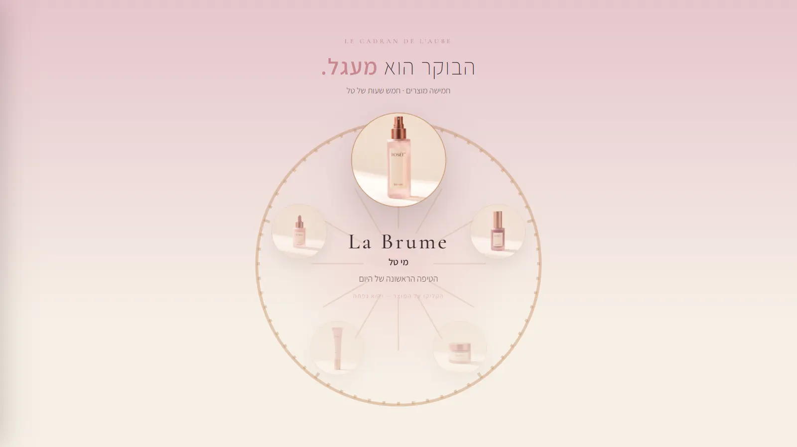
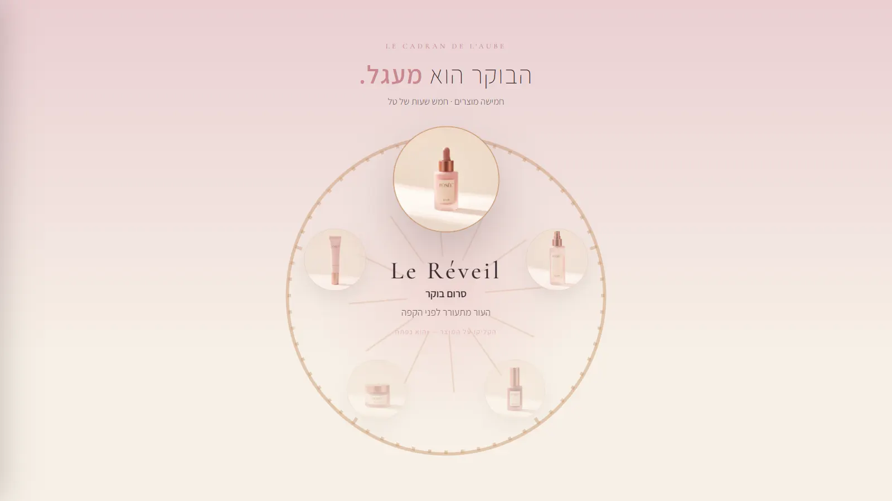
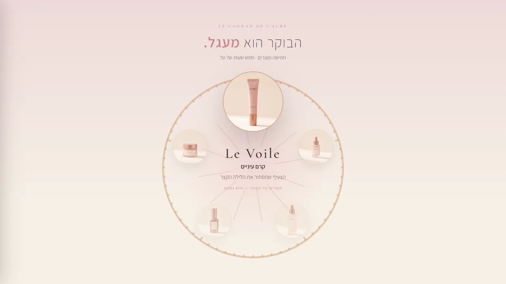
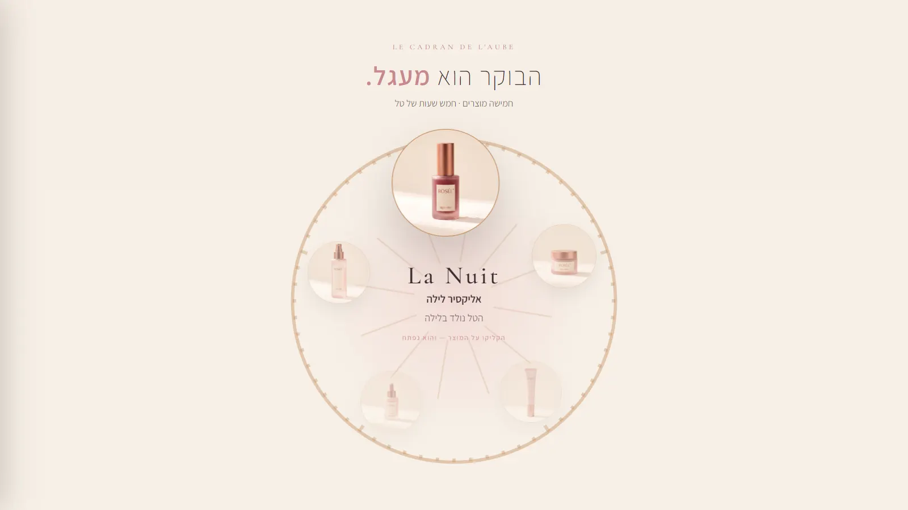
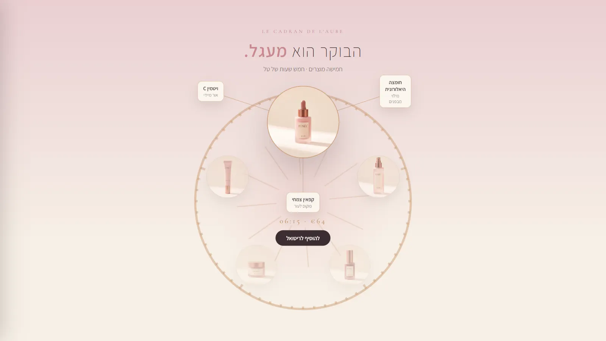
ארבע שעות ומצב פתוח. הגלגל, הכותרת והמרכז לא זזים. רק השעה, המוצר והשמיים.
ואז הקליק. ברוב האתרים קליק על מוצר מוביל לעמוד מוצר. כאן קליק על המוצר הממוקד פותח אותו: המרכז מתפנה, ושלושת המרכיבים שלו עפים החוצה על קווי נחושת, כל אחד עם תפקיד של מילה או שתיים. ויטמין C, אור מיידי. חומצה היאלורונית, מילוי מבפנים. רק אז, מתחת, מופיעים השעה וכפתור "להוסיף לריטואל". המרכיבים לא נעלמו מהמותג. הם פשוט הפסיקו להיות הכותרת.
זה ההבדל בין עיצוב קולקציה למיתוג קולקציה. עיצוב שואל איך חמשת הבקבוקים נראים יחד. מיתוג שואל מה הציר שמחזיק אותם, כך שכשיתווסף מוצר שישי, כולם יידעו איפה הוא יושב על השעון. המוצר השישי ממוקם עוד לפני שהמציאו אותו.
מה נשאר קבועהגלגל, השעה ליד כל מוצר, הכיוון של השעון, שלושה מרכיבים לכל מוצר.
שכבה 4: Le Rituel, שלושה צעדים לפני הקפה
מתחת לשעון, הפרוטוקול. "שלושה צעדים. לפני הקפה." ומתחת, השורה שמסגירה מי כתבה אותו: "פרוטוקול הבוקר, כמו שקוסמטיקאית הייתה רושמת אותו." שלוש תחנות על ציר נחושת אחד: 05:30 מעירים את העור עם מי הטל, 06:15 טיפה אחת של סרום כשהעור עוד לח, 07:45 חותמים באור עם קרם היום. לכל תחנה שורה אחת של הסבר מקצועי, בגובה העיניים: "הסרום נכנס כשהעור עוד לח, ככה הוא מחזיק את הטל בפנים."
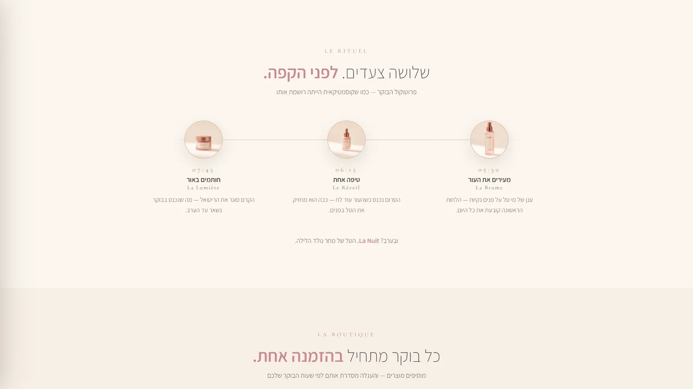
ושימי לב לשורה האחרונה של המקטע: "ובערב? La Nuit. הטל של מחר נולד הלילה." אליקסיר הלילה הוא מוצר בקולקציה, אבל הוא לא כותרת. הריטואל הוא ריטואל בוקר, כי ההבטחה היא בוקר. אם הלילה היה מקבל מקטע משלו, ההבטחה הייתה נחלשת. זה מה שהחלטה טובה עושה: היא קובעת לא רק מה נכנס, אלא גם מה נשאר בשוליים.
למה קליניקה צריכה שכבת ריטואל? כי זה המקום שבו הפרימיום מקבל הוכחה. "מקצועי" זו מילה. פרוטוקול עם שעות, סדר וסיבה לכל צעד, זה מה שהופך את הקוסמטיקאית ממוכרת של מוצרים למי שכותבת את הבוקר של הלקוחה. ולמותג אמיתי זה גם המקור לכל תוכן "איך משתמשים": הסטורי של הבוקר כבר כתוב.
מה נשאר קבועציר הנחושת, שלוש שעות, שורה אחת לכל צעד, הלילה בשוליים.
שכבה 5: La Boutique והריטואל שלי
וזו הנקודה שבה רוב עולמות המותג נשברים: הקופה. האתר יפה, הסיפור יפה, ואז לוחצים "הוסף לסל" ונוחתים במערכת חנות שנראית כמו כל חנות. ב-ROSÉE° החנות חיה בתוך העולם. חנות הדגל, נישות קשת ורודות ופודיום שמנת, ומתחתיה מדף של חמישה כרטיסים. ובכל כרטיס, לפני השם ולפני המחיר, השעה.
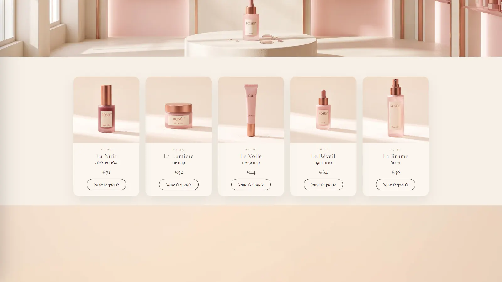
ועכשיו ההוכחה. העגלה של ROSÉE° לא נקראת "סל". היא נקראת "הריטואל שלי". וכשמוסיפים אליה מוצרים, היא לא מסדרת אותם לפי סדר הלחיצה. היא מסדרת אותם לפי שעות הבוקר. בצילום הזה הוספתי בכוונה בסדר הלא נכון: קודם קרם יום של 07:45, אחר כך אליקסיר לילה של 22:00, ורק בסוף מי טל של 05:30. העגלה סידרה בעצמה: 05:30, 07:45, 22:00.
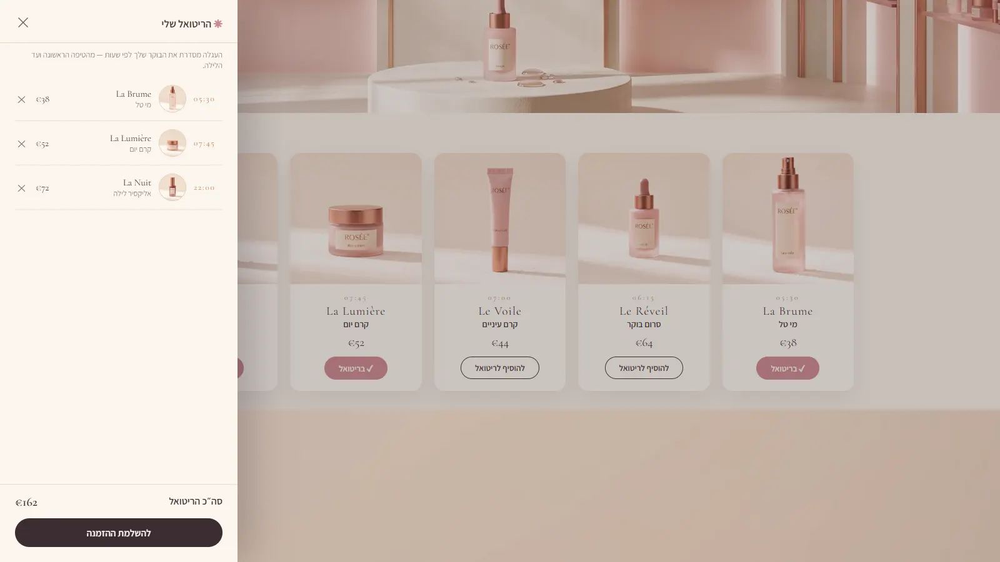
כאן ההחלטה נסגרת. "לא מוכרים סרום, מוכרים שגרת בוקר" הופך משורה במסמך אסטרטגיה להזמנה שנראית כמו בוקר שנבנה מול העיניים, ולא כמו רשימת קניות. למותג טיפוח אמיתי זה אומר שהעגלה, עמוד התשלום והמייל של אישור ההזמנה הם חלק מהמיתוג בדיוק כמו הבקבוק. הלקוחה שראתה את הטיפה באינסטגרם צריכה להרגיש שהיא עדיין באותו בוקר, עד הרגע שהיא לוחצת להשלמת ההזמנה.
מה נשאר קבועהשעה לפני השם, המילה ריטואל במקום סל, המיון לפי בוקר.
שכבה 6: Le Film, טיפה אחת, כל בוקר
עשר שניות. אותה טיפה מהפתיח, הפעם כסרט רציף שמתנגן לבד. מצלמה נעולה, בלי חיתוכים, בלי דיבור. "טיפה אחת, כל בוקר." הסרט והרצף הנגלל הם אותו חומר: הסרט נוצר קודם, ופורק לפריימים שהגלילה מנגנת. לכן הם מסכימים זה עם זה בכל פיקסל.
למה מותג טיפוח צריך סרט של עשר שניות? כי סרט מותג מגדיר תנועה, ותנועה היא הדבר שהכי קשה לזייף אחר כך. מהרגע שיש תנועה אחת (טיפה נופלת, פורחת, לאט), כל ריל וכל מודעה שיצולמו בעתיד יודעים איך להתנהג. הסרט נוצר בכלי וידאו AI מאותה מערכת תמונה של הבקבוקים, ועל השיטה יש מאמר נפרד.
מה נשאר קבועהטיפה, הוורוד החלבי, המצלמה הנעולה, הקצב האיטי.
שכבה 7: Les Histoires, הסטוריז והקרוסלות
וזה החלק שבו רוב מותגי הטיפוח מתפזרים. הפוסט של המוצר החדש מיוצר בכלי אחד, הסטורי מהקליניקה בטלפון, והריל אצל עורכת חיצונית. שלושה מקורות, שלוש שפות, ולפעמים שלושה ורודים שונים. ב-ROSÉE° תוכן הסושיאל לא נוצר מחדש. הוא נחתך מהעולם: שני השקפים המרכזיים של הקרוסלה הם הקלטה חיה מהאתר עצמו, שעון השחר מסתובב והעגלה מתמלאת, בלי הדמיה ובלי מסגרת. והסרט נחתך לגובה של טלפון.
הבוקר הוא מעגל. en direct.
הגלילה מסובבת את השעון. הקלטה מהעולם, לא הדמיה.
הריטואל שלי se remplit.
מוסיפים מהמדף, והעגלה מסדרת לפי שעות הבוקר.
טיפה אחת chaque matin.
אותו סרט, בגובה של טלפון. אותה טיפה, אותו קצב.
שלוש סטוריז. לא תוכן חדש, אלא אותו עולם בפורמט של הטלפון.
ויש עוד שני נכסים שנולדו מהעולם הזה, כי הוא ענה על שאלה שרציתי להראות ולא רק להגיד. הראשון הוא העדשה: אותו בקבוקון סרום בדיוק, פיקסל לפיקסל, פעם בלי שפה ופעם בתוך העולם של ROSÉE°. אותו מוצר. רק העולם מסביבו השתנה. על זה יש מאמר עם העדשה הנגררת, ואת יכולה לבדוק בעצמך על איזה מהשניים היית משלמת יותר.
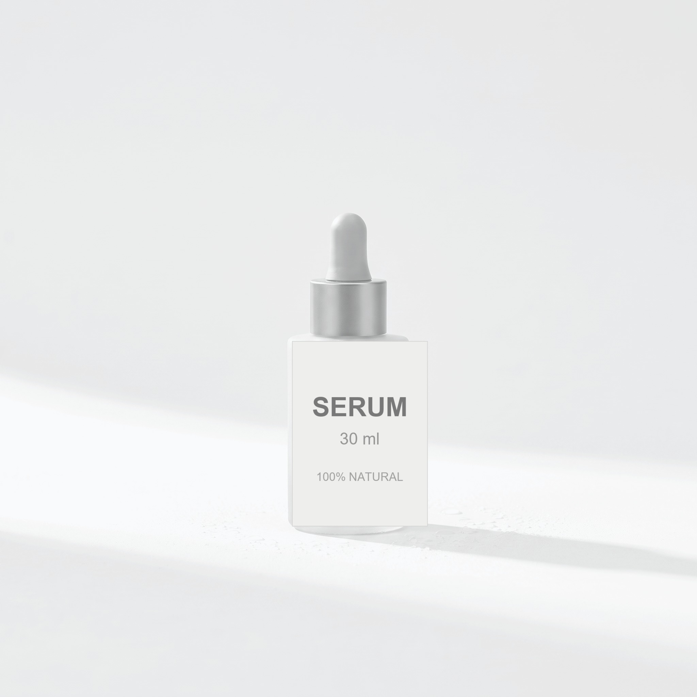
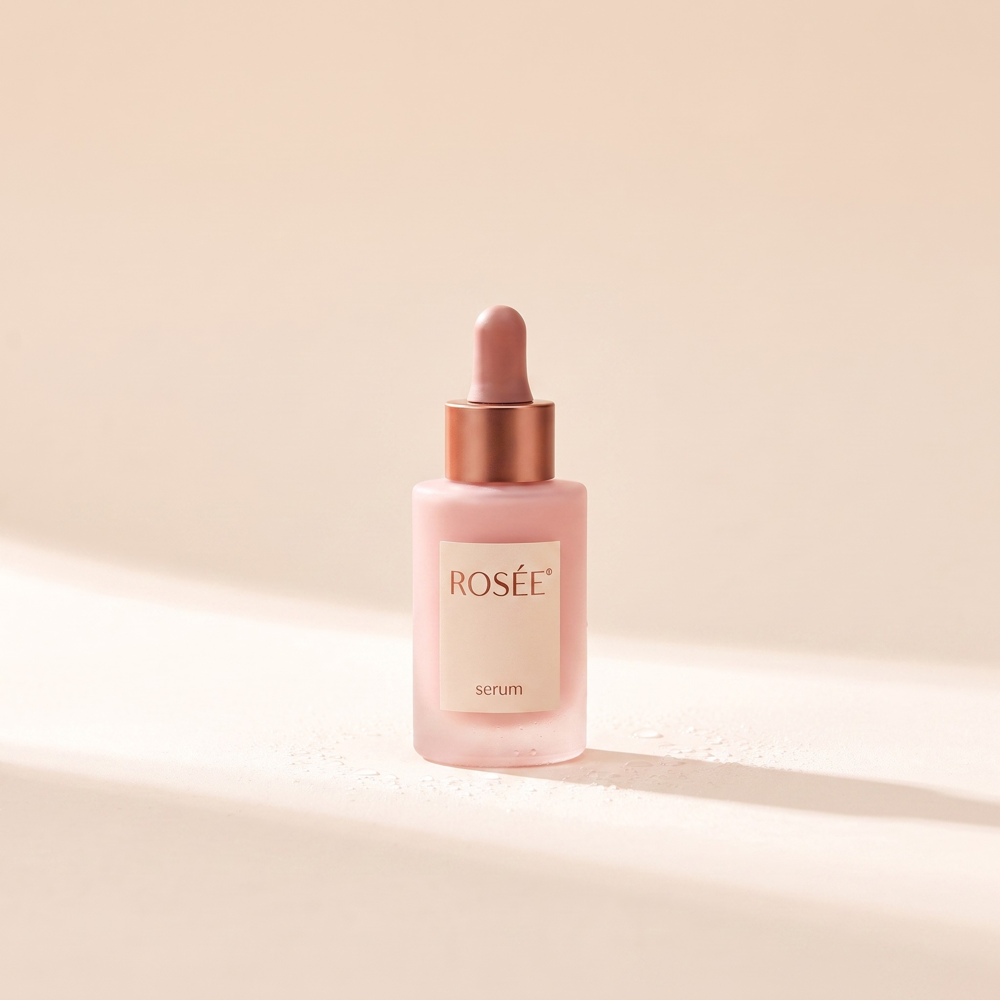
השני הוא פרק ההמשכיות: קרוסלה של הסטודיו שעוברת על שש נקודות המגע של העולם ושואלת בכל אחת מה ההבטחה עשתה שם. שני השקפים החזקים בה הם החנות, שבה העגלה סידרה בעצמה את הבוקר, והגבול: La Nuit כמוצר, לא ככותרת. כי הבטחה טובה קובעת גם מה נשאר בשוליים.
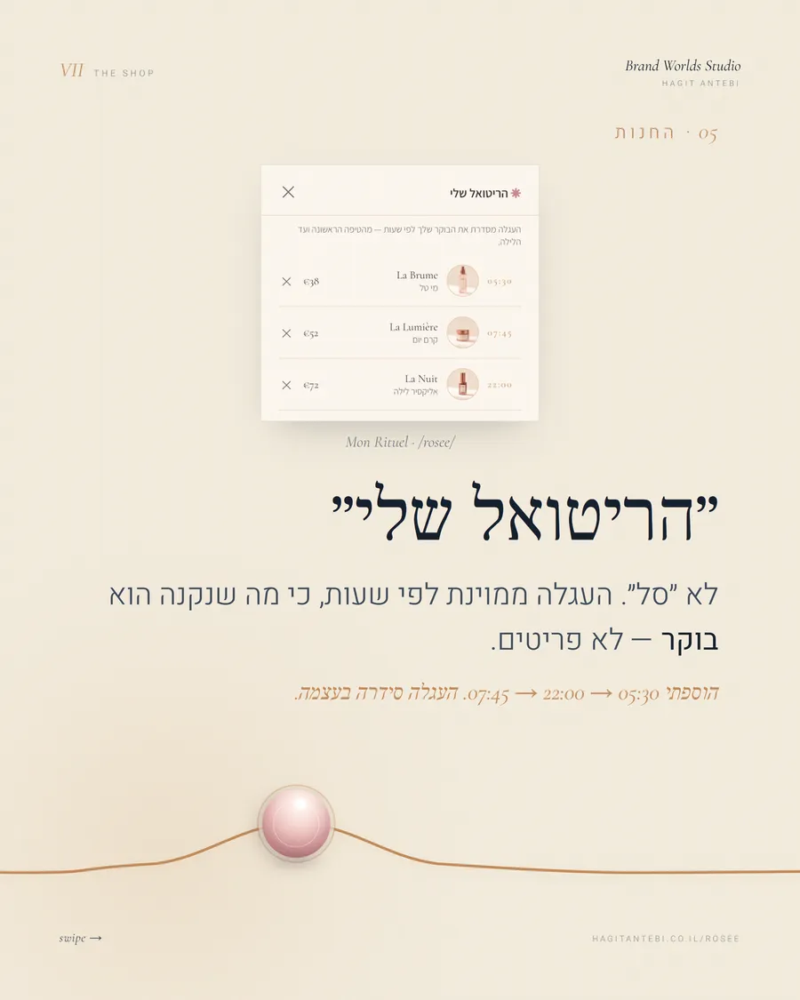
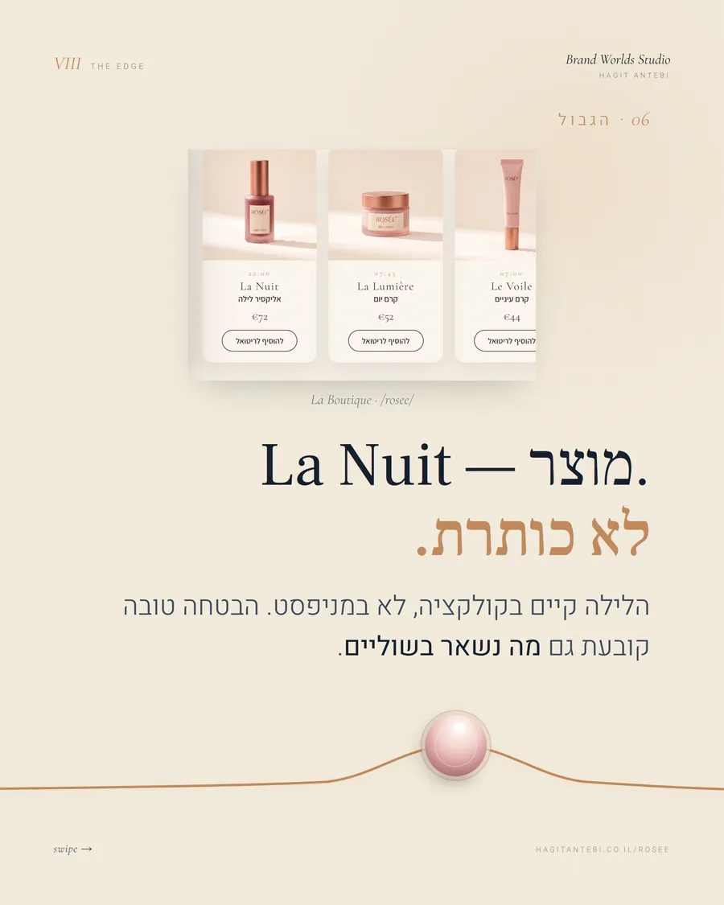
ההשלכה למותג אמיתי פשוטה: כשיש עולם, תוכן הסושיאל הוא נגזרת ולא פרויקט. הסטורי של "המוצר של החודש" לוקח את השעה שלו, את השורה של הקוסמטיקאית ואת הטיפה, ומוכן תוך דקות. לא צריך לחשוב איך זה אמור להיראות, כי העולם כבר ענה.
מה נשאר קבועהכול. הסטורי הוא העולם, רק צר יותר.
שבע נקודות מגע, טבלה אחת
| נקודת מגע | מה היא עושה | מה נשאר קבוע |
|---|---|---|
| La Goutte | פותחת את העולם, מלמדת את הקצב | הטיפה, הוורוד החלבי, שורה אחת |
| Le Manifeste | אומר את ההבטחה בלי לומר סרום | המילה טל, ארבע שורות |
| Le Cadran de l'Aube | הופך חמישה מוצרים לשעון | השעה ליד כל מוצר, כיוון השעון |
| Le Rituel | מוכיח את המקצועיות | ציר הנחושת, שלוש שעות, הלילה בשוליים |
| La Boutique והריטואל שלי | הופכת את העולם לרכישה | השעה לפני השם, מיון לפי בוקר |
| Le Film | מגדיר את התנועה | הטיפה, המצלמה הנעולה, הקצב |
| Les Histoires | מפיצות את העולם | הכול, בפורמט צר |
קראי את העמודה השמאלית מלמעלה למטה. זו ההגדרה הכי פשוטה שיש לי לעולם מותג: רשימת הדברים שלא משתנים כשעוברים מנקודת מגע לנקודת מגע. וב-ROSÉE° יש בה שיעור שחוזר בכל שורה: הדבר שלא משתנה הוא לא צבע ולא לוגו. הוא שעה. כשהציר של המותג הוא הזמן, אפשר להחליף בקבוק, להוסיף מוצר, לצלם קמפיין חדש, והמותג נשאר הוא.
מה זה אומר לקליניקה ולמותג הטיפוח שלך: מיתוג סרום שנבחר ולא מושווה
ROSÉE° דמיוני, אבל הפער שהוא פותר אמיתי מאוד. סרום הוא המוצר הכי קל להשוות בעולם: בקבוקון, טפטפת, שלושה מרכיבים ואחוז. מותג טיפוח שמתאר את עצמו דרך המרכיבים נכנס לבד לטבלה שבה מישהי תמיד זולה יותר. וזו לא בעיה של איכות. הסרום שלך יכול להיות הטוב בטבלה ועדיין להיות בטבלה.
מותג טיפוח עם עולם נבחר. מותג טיפוח בלי עולם מושווה. ההבדל הוא לא כמה יפה הבקבוק, אלא האם מה שנמכר הוא סרום או שגרת בוקר. שגרת בוקר אי אפשר להשוות. אפשר רק להיכנס אליה או לא.
וזו החלטה, לא תכונה. ROSÉE° לא הוציא את עצמו מהטבלה כי הוא יקר או כי הבקבוק ורוד. הוא יצא ממנה ברגע שהחליט שהוא מוכר בוקר, ואז נתן לכל נקודת מגע לעשות את אותה עבודה: הגלגל, הריטואל, העגלה, הסרט. בשיחות האבחון אני עושה בדיוק את התרגיל שעשינו כאן, על העסק האמיתי: פורסות את המוצרים, האריזה, האתר וחמישה פוסטים אחרונים על שולחן אחד ושואלות מה נשאר קבוע. כשיש קו טיפוח, התשובה כמעט תמיד היא "הלוגו והמרכיבים". וכמעט תמיד זה לא מספיק, כי המרכיבים הם בדיוק מה שהטבלה משווה.
איך זה נבנה
בקצרה, כי יש על זה מאמר שלם: ההחלטה נכתבה קודם, בשלוש מילים ומשפט אחד. ממנה נגזרה מערכת תמונה אחת: זכוכית ורודה, נחושת, שמנת, שמיים של שחר. הטיפה נוצרה כווידאו AI ופורקה לשמונים פריימים שהגלילה מנגנת, ואותו וידאו הוא הסרט. תצלומי המוצרים נוצרו כליין־אפ אחד ואז פורקו לתצלומי סולו עם אותה תאורה ואותה זכוכית, כדי שהגלגל, המדף והעגלה ידברו שפה אחת. הקוד תפר הכול: שעון השחר, הריטואל, החנות עם העגלה שממיינת לפי שעות. הקרוסלות והסטוריז נחתכו בסוף, מהעולם המוכן. זה הסדר שאני עובדת בו בכל עולם: DNA לפני כלים, תמיד.
עולמות שכנים
ROSÉE° הוא הפרק השלישי בסדרת "סיפורי עולמות". שני הפרקים הקודמים פירקו בית מקרונים ובוטיק שוקולד, ועוד שלושה עולמות טיפוח ויופי מהסטודיו קרובים ברוח ושונים בסיפור:
שאלות נפוצות על מיתוג סרום כעולם מותג
מה זה מיתוג סרום בגישת עולם מותג?
מיתוג שמתחיל מהחלטה אחת ולא מבקבוק. ב-ROSÉE° ההחלטה היא שהמוצר הוא לא הגיבור, הבוקר הוא. מההחלטה נגזרים הקולקציה כשעון, הריטואל, החנות שממיינת לפי שעות, הסרט והסטוריז. הלקוחה מזהה את המותג בכל נקודת מגע כי כולן ממשיכות את אותה שגרת בוקר.
איך מותג טיפוח עם חמישה מוצרים נשאר מותג אחד?
נותנים לחמשת המוצרים ציר משותף שהוא לא הצבע ולא הלוגו. ב-ROSÉE° הציר הוא הזמן: לכל מוצר יש שעה של בוקר, והשעה מופיעה על הגלגל, בריטואל, בכרטיס ובעגלה. כשלכל מוצר יש מקום על אותו ציר, אפשר להוסיף מוצר שישי ולדעת מראש איפה הוא יושב.
למה העגלה ב-ROSÉE° ממיינת לפי שעות?
כי ההבטחה של המותג היא שגרת בוקר, לא רשימת מוצרים. העגלה נקראת "הריטואל שלי", וכל מוצר נכנס אליה עם השעה שלו. גם אם הלקוחה מוסיפה בסדר אחר, העגלה מסדרת: 05:30, 07:45, 22:00. זו ההוכחה שההבטחה חיה גם בנקודת המגע הכי טכנית.
איך נבנה עולם המותג של ROSÉE°?
החלטה אחת, מערכת תמונה אחת, וידאו AI של טיפה שפורק לפריימים שהגלילה מנגנת, תצלומי מוצר שנוצרו כליין־אפ אחד, וקוד שתופר הכול: שעון השחר, הריטואל, החנות והסרט. הקרוסלות והסטוריז נחתכו מהעולם המוכן. ROSÉE° הוא קייס סטדי של הסטודיו, לא מותג מסחרי.
מה קורה כשהאתר, האריזה והאינסטגרם של מותג טיפוח מעוצבים בנפרד?
הלקוחה פוגשת סרום שנראה כמו כל סרום, ובלי עולם אין לה דרך להעדיף. היא משווה מחיר ואחוזי חומר פעיל. עולם מותג מוציא את הסרום מהטבלה: כשמה שנמכר הוא שגרת בוקר, אין למה להשוות אותה. המותג נבחר ולא מושווה.
ROSÉE° הוא עולם מספר 03 בסדרת "סיפורי עולמות": בכל פרק אני לוקחת עולם אחד מהארכיון ומפרקת אותו לשכבות, עם הנכסים האמיתיים שלו מוטמעים בעמוד. הטיפה, השעון, הריטואל, העגלה והסרט שמופיעים כאן הם אותם קבצים שמריצים את העולם עצמו, ושני שקפי הווידאו הם הקלטה חיה ממנו. הפרקים הקודמים, הסיפור של Pétale° והסיפור של MELTÉ°, עשו את אותו תרגיל על בית מקרונים ועל בוטיק שוקולד. זו הדרך שלי להראות שעולם מותג הוא לא רעיון אלא קבצים שמדברים באותה שפה.
חמישה מוצרים, חמש שעות, טיפה אחת.
ומכולם, דבר אחד שלא נעלם עד הצהריים.
זה מה שהלקוחה מזהה.
וזה מה שגורם לה לבחור.
מה המותג שלך מוכר באמת?
באבחון פער המותג פורסות יחד את המוצרים, האריזה, האתר והפוסטים על שולחן אחד, ובודקות איפה יש עולם ואיפה יש רק סרום בטבלה.
לאבחון פער המותג ←